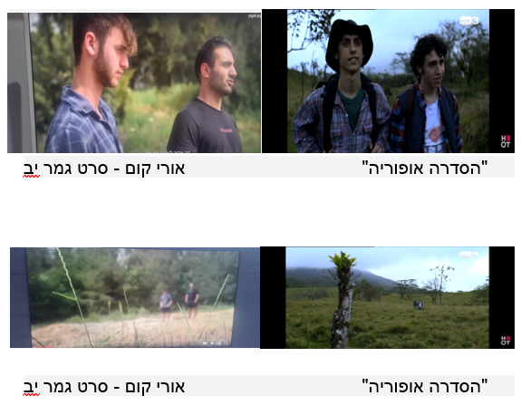
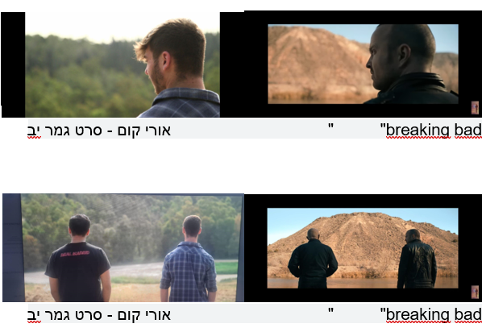

📽️ סרטון 4.1 — ניתוח מקורות השראה
*הסרטון הופק ומוצג על ידי טומי כהן - מדריך בפיקוח
כדי לגבש מושג על אופן הנראות של הסרט, מומלץ להכיר יצירות רבות מתחומי אמנות שונים. מטרת היצירות היא אחת: ביצוע תחקיר אודות אופן הנראות של הסביבה בה מתרחשת העלילה. קבלת השראה מסרטים או מיצירות המוכרות לכם תקל על אופן העבודה שלכם, ותמקסם את הסרט בהיבט המקצועי.
🎨 השראות חזותיות (ראפרנסים)
לצורך סרט היסטורי או סרט בהווה, יש הכרח להכיר מרכיבים חזותיים המאפיינים את התקופה והמקום: אור, צבע, מרקם, פרספקטיבה וקומפוזיציה.
אלה ניתנים לתפיסה באמצעות: ציורים, רישומים, צילומי סטילס, קטעי סרטים, יצירות וידאו (וידאו ארט, קליפים), ותיאורים חזותיים מספרים. ככל שהעבודה על ההשראות תהיה מעמיקה יותר, כך תגבשו את הרעיון החזותי בצורה מדויקת שתשרת את התסריט.
👥 ניתוח לפי תפקיד מקצועי
בשלב זה יש לכתוב ניתוח סצנות מסרטים שונים מנקודת תפקידו של כל אחד מאנשי הצוות:
🎬 הבמאי
לוקח השראה מהמיזנסצנה: יחסים בין הדמויות, דימויים, אפיון הדמויות, בחירות אמנותיות ועוד.
📷 הצלם
מתייחס לתאורה, גדלי השוטים, זוויות, תנועות מצלמה, עומק שדה ועוד.
🎯 המפיק
מתייחס לבחירת לוקיישנים, בחירת דמויות, מראה, טייפקאסט ועוד.
✂️ העורך
מקבל השראה מקצב העריכה, סגנון העריכה, הצבעים ועוד.
🎥 דוגמה: "אורי קום" — אורט קרייזמן גבעתיים
סרט המגולל את הסיפור של אורי, המצוי בטראומה בעקבות אובדן הוריו, וחווה רצף חלומות שגורמים לו לחקור את האבל בחייו האמיתיים ול"נצח" אותו במקצת.

התמונה משקפת את ההשראה שהיוותה הסדרה "אופוריה" בשבילי ללוקיישן טרופי, "חלומי" — שטחים רחבים, שצבעם הבולט הוא ירוק. האווירה החלומית מתבקשת בסרט שלי, כמו ב"אופוריה", מכיוון שבשתי היצירות הדמות הראשית נמצאת בחלום. הדמויות מבודדות ונמצאות במצב של אובדן דרך. הלוקיישן משקף את תחושותיו של הגיבור. מ"אופוריה" גם אימצנו את החולצה המכופתרת המשובצת שהשחקן, אורי, לבש במהלך סצנות החלום, והיא בעלת גוון דומה. לדעתנו, הלבוש הוסיף גם לאווירה החלומית, מכיוון שלא נהוג ללבוש חולצות מכופתרות, ובוודאי שלא באמצע היער.

בנוסף, יש שוטים הלקוחים ישירות מ-Breaking Bad. כמו ב-Unbreakable, גם מהסדרה הזו אימצנו לא רק שוטים אחדים ואת העמדתם של השחקנים, אלא אווירה שלמה — שפה קולנועית המתבטאת בעריכה האיטית, בשוטים הרחבים ובאקסטרים לונג שוטים משלל מקומות.
📖 מידע נוסף על ז'אנרים קולנועיים ראו ב"אתר עושים תקשורת" — הכל בכף היד — הפקות קולנוע שכבת יב — ז'אנרים
📽️ סרטון 4.2 — כתיבת תסריט עלילתי
*הסרטון הופק ומוצג על ידי טומי כהן - מדריך בפיקוח
ממש כפי שלקולנוע המצולם יש שפה, כך גם לתסריט יש שפה משלו, ולכל שפה יש כללים. הכלל החשוב ביותר: בתסריט ניתן לכתוב רק פעולות ודיאלוגים, ואין לכתוב כוונות ומחשבות. כלומר, יש לכתוב רק מה שניתן לצלם — וזו לא רק התעקשות טכנית, אלא הבנה חשובה גם לפיתוח שפת הקולנוע שלכם.
SHOW, DON'T TELL
הכלל החשוב ביותר בכתיבת תסריט — כתבו רק מה שניתן לצלם!
🏗️ מבנה הסיפור הדרמטי
כלל ראשון: התחלה — אמצע — סוף.
כלל שני: נקודות מפתח: אקספוזיציה, מאורע מחולל, נקודת מפנה, שיא, התרה.
💡 בכל סרט מתחולל שינוי — הצופים מזדהים עם הגיבור, והוא עובר תהליך רגשי ו/או שינוי פיזי. כל סרט מתחיל בנקודה א׳ ומסתיים בנקודה ב׳.
✍️ כתיבת התסריט
הכתיבה התסריטאית מלמדת אותנו שאנו יכולים לכתוב רק מה שהמצלמה יכולה לצלם. אין לכתוב פעלים מופשטים כמו: חושב, מרגיש, נזכר — אלא רק את הביטוי הוויזואלי שלהם.
סצנה תסריטאית מורכבת מדיאלוג + תיאור התרחשות.
👁️ המשפט הוויזואלי
תיאור הכתוב בזמן הווה, פשוט וקריא, כך שהקורא יוכל לראות את התמונה כנגד עיניו. כותבים רק מה שניתן לראות.
❌ לא ויזואלי
רוני מתכוונת לסטור לאורי.
✅ ויזואלי
רוני סוטרת לאורי.
📄 דוגמה לפורמט תסריט
1. פנים. כיתה. יום
נרי, (39) אך נראית צעירה לגילה, נכנסת לכיתה מוזנחת, שנדמה כי נתקעה בשנות השמונים, הקירות מתקלפים מרטיבות וטחב. נרי מניחה את התיק על שולחן המורה, גם השולחן מתנדנד ולא יציב. נרי לוקחת טוש וכותבת על הלוח כותרת — "פורמט כתיבת תסריט"
נרי:
שלום לכולם, פתחו מחשבים, בבקשה, והעתיקו.
הלומדים פותחים מחשבים, ומעתיקים מהלוח בשקט וסקרנות. לפתע, קם אורי (18), לבוש חולצה של "מכבי" תל אביב.
אורי:
אני לא מבין מה בדיוק להעתיק?
נרי:
זה פורמט לכתיבת תסריט.
בצד ימין כותבים את הפעולות,
ובאמצע את הדיאלוג.
לפתע, רעש חזק נשמע מהתקרה, והמקרן נתלש ממקומו, ונתלה על כבל אחד מעל הראש של רוני (18). רוני קמה וצורחת. כולם בורחים מהכיתה…
📖 לתוכן נוסף: אתר "עושים תקשורת" — סביבת המודל — תסריטאות — פרק 4 כתיבת דיאלוגים
❓ שאלות מנחות
• 1. האם כתבתם רק מה שהמצלמה יכולה לצלם — משפטים ויזואליים?
• 2. האם כתבתם כותרת "סצנה" לכל סצנה (יום/לילה, לוקיישן פנים/חוץ)?
• 3. האם כתבתם מתחת לכותרת הסצנה את תיאור הפעולות וההתרחשות?
• 4. האם הצגתם את הדמויות (שם, גיל, תיאור)?
• 5. האם כתבתם את הדיאלוגים באמצע (ולא בצד)?
• 6. האם כתבתם מונחים כמו: O.S / OFF SCREEN / VOICE OVER?
📽️ סרטון 4.3 — כתיבת תסריט תיעודי
*הסרטון הופק ומוצג על ידי טומי כהן - מדריך בפיקוח
ממש כפי שלקולנוע המצולם יש שפה, כך גם לתסריט יש שפה משלו, ולכל שפה יש כללים. הכלל החשוב ביותר, שיש להבינו לעומק, הוא: SHOW, DON'T TELL.
🎯 נושא הסרט
השלב הבסיסי בפיתוח סרט דוקומנטרי הוא החיפוש אחר הנושא — תשובה לשאלה "על מה הסרט?" מציאת הנושא נובעת מחיפוש של פעולה ודמות.
סרט דוקומנטרי מתעד דמות המתמודדת עם קונפליקט — ניגוד של שני רצונות: פנימי ו/או חיצוני. מתוך הקונפליקט והדרך לפתרונו, נמצא את נושא הסרט.
🎬 דוגמה: "לאכול בגדול"
נושא: הקשר בין תרבות הג'אנק פוד למגפת ההשמנה המסוכנת.
קונפליקט: הגיבור מתמודד עם אכילת "מקדונלדס" במשך 30 ימים, תוך סיכון בריאותו.
פתרון: הוא שמן מאוד ובריאותו בסכנה — הפועל היוצא של נושא הסרט.
🔄 מרעיון לתסריט
א. מצאו דמות / אירוע / תופעה
בסביבה הקרובה שלכם, המעוררים עניין לסרט.
ב. אם בחרתם דמות
ראיינו את הדמות והגדירו: מה הסיפור שלה? עם איזה קונפליקט היא מתמודדת? מה המרחב בו היא פועלת? אילו סצנות אפשר לייצר כדי להמחיש את הקונפליקט?
ג. אם בחרתם תופעה
איזו דמות מתאימה ביותר כדי שנחווה דרכה את התופעה? מי הן הדמויות שרצונותיהן יכולים להתנגש? מה יכול להשתבש? איפה הקושי, ומהי הדרך לפתרון?
🔍 חיפוש הקונפליקט בתחקיר
יש לזהות בתחקיר את הסיפור והדרמה, ולתרגם לקונפליקט המתקיים כיום. גם אם האירוע קרה בעבר — נבין כיצד הקונפליקט חי וקיים כעת מול עיני המצלמה.
🎥 הסצנה הדוקומנטרית
💡 ערך הסיטואציה
האם תעדיפו לשמוע הרצאה, או לראות מעשים שימחישו את הדברים? האם תעדיפו לשמוע דמות מספרת מה היא מרגישה, או להבין את הרגש דרך פעולה בתוך סיטואציה? לסיטואציה הדוקומנטרית יש ערך רב — הצופה פעיל ומבין בעצמו את עולמה של הדמות באמצעות פעולותיה ותגובותיה.
🧱 חומרי הסיפור הדוקומנטרי
🖼️ וויזואליות
קטעי וידאו ארכיוניים קצרים, תמונות סטילס, ויזואליות סימבולית.
🎬 סצנה דוקומנטרית
אירוע בזמן ובמקום ספציפיים, הקורה לדמות ומשפיע עליה.
🗣️ עדות / ראיונות
הדמות עונה על שאלות, או מספרת דבר-מה מנקודת המבט שלה.
❓ שאלות מנחות
• 1. האם קיימים דמות, אירוע או תופעה בסביבתך הקרובה שמעוררים עניין לסרט?
• 2. האם בררתם: מהו נושא הסרט? מהם הדילמה, הקונפליקט, ההתמודדות? מה רוצה הגיבור ומהו המכשול?
• 3. האם ניסחתם שאלון לראיון — משאלות פתוחות, כדי לא להשפיע על תשובות המרואיין?
• 4. האם הלוקיישנים משקפים ויזואלית את הדמות, הפעולות וההתרחשות?
• 5. האם ייתכן שהסיפור הוא אחר ממה שחשבתם — ולכן מדהים יותר ממה שציפיתם?
• 6. האם הכנסתם את הדמות לסיטואציה / ללוקיישן בהם נרגיש את הקונפליקט?
• 7. האם נעזרתם בתוצאות התחקיר כדי לכתוב סצנות ופעולות של הגיבור?